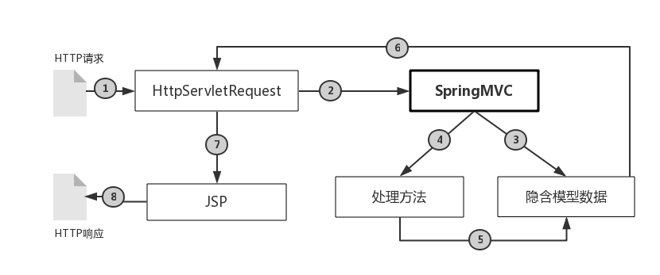

前言
在上一篇博客中我们已经解决了HTTP请求中的信息是如何转换到控制器的处理方法入参的问题，现在接着解决上一篇博客开头提出的第二个问题：处理方法输出的模型数据又是如何传递给视图进行渲染的？
模型数据
对于MVC框架而言，M就是model模型数据，其重要的地位在于控制器C与视图V都是为了模型M服务的，从之前博客中介绍的SpringMVC工作流程中可以看出，控制器最终的输出就是模型数据，而视图就是用来渲染模型数据的。再次简单重复一遍SpringMVC的工作流程：首先通过@RequestMapping将HTTP请求引导到控制器处理方法上，再通过DataBinder将请求中的信息传入方法入参，处理方法执行业务逻辑，产生模型数据给视图，最终视图渲染模型数据，形成了HTTP响应给请求客户端。
SpringMVC提供了以下几种方式将处理方法产生的模型数据传递给视图：
- ModelAndView:当处理方法返回值类型为ModelAndView时，处理方法体可以通过该对象添加模型数据
- @ModelAttribute:在方法入参标注该注解，入参对象就会放入模型数据中
- Map和Model：如果方法入参为org.springframework.ui.Model,org.springframework.ui.ModelMap，java.util.Map类型时，当处理方法返回，Map中的数据会自动添加到模型数据中
ModelAndView
由上可知，当控制器处理方法的返回值是ModelAndView(Model可以简单理解为Map
通过以下方法设定模型数据：
- ModelAndView addObject(String attributeName,Object attributeValue)
- ModelAndView addAllObjects(Map
通过以下方法设置视图：
- void setView(View view):设定一个具体的视图对象
- void setViewName(String viewName)：设定一个逻辑视图名
@ModelAttribute
如果在处理方法的入参上标注了@ModelAttribute，那么该入参对象就会加入模型数据中，如下所示：
|
|
SpringMVC将HTTP请求中的参数绑定到处理方法的入参对象User中，然后再以user为键User对象为值将其存入模型数据，同时SpringMVC会在方法结束时将模型数据传递到视图上下文中暴露给视图对象，例如如果是JSP视图，那么SpringMVC会将模型数据存入ServletRequest的属性列表暴露给JSP访问。
@ModelAttribute不仅仅可以给处理方法的入参注解，还可以给方法注解，比如：
|
|
这样的话，SpringMVC在调用处理方法之前，会事先调用在方法级别上标注了@ModelAttribute方法，并将这些方法的返回值添加到模型数据中。
如果上述两种情况同时存在，比如：
|
|
在访问该控制器的任何一个处理方法之前，都会先调用getUser()方法将User对象添加到模型数据中，由于处理方法的入参标注了同名的@ModelAttribute。这时SpringMVC会先用已经添加进模型数据的User对象给入参赋值，然后再根据HTTP请求中的参数对处理方法的入参进行填充。
Map和Model
SpringMVC在调用处理方法之前会创建一个隐含的模型对象，作为模型数据的容器，如果处理方法的入参为Map或Model类型的话，SpringMVC会将这个隐含模型的引用传递给这些入参。在方法体内，我们就可以通过这个入参访问模型数据或者添加新的数据。如下所示：
|
|
总结
至此我们已经解决了上篇博客提出的两个问题，这里单从数据的输入/输出层面分析SpringMVC框架的如何工作的，如图所示:

- HTTP请求到达Web容器，Web服务器将其封装成一个HttpServletRequest对象
- SpringMVC截获这个HttpServletRequest对象，并找到相应的控制器处理
- SpringMVC调用相应的控制器处理方法前，创建一个隐含的模型数据，作为本次请求的上下文数据存放处
- SpringMVC将HttpServletRequest对象中的数据绑定到处理方法的入参，同时将绑定信息，校验信息保存在模型数据中
- 处理方法处理业务逻辑，同时可以将处理结果数据保存到模型数据中
- SpringMVC将本次请求对应的模型数据存放到HttpServletRequest属性列表，暴露给视图
- 视图对模型数据进行渲染
- 将渲染后的HTTP响应报文发送给请求客户端
以上就是SpringMVC中数据的大致流向，花了整整一天半时间来完成这两篇博客，虽说是复习整理但是自己收获很多，而且对SpringMVC框架又有了新的认识，希望以后毕业了在工作中能理解地更加深刻吧。